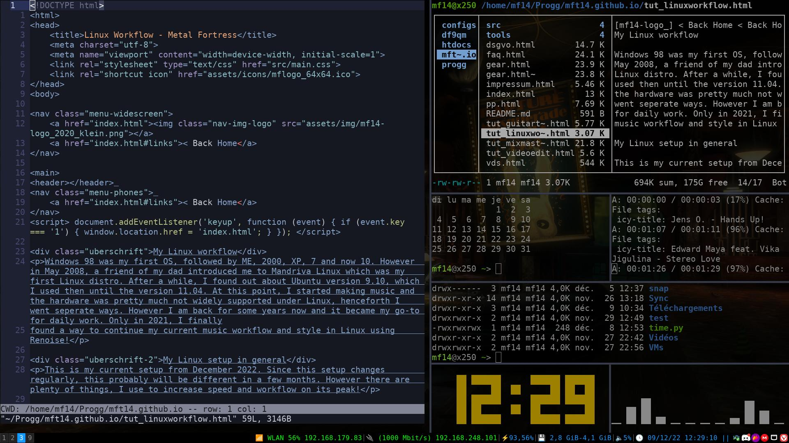
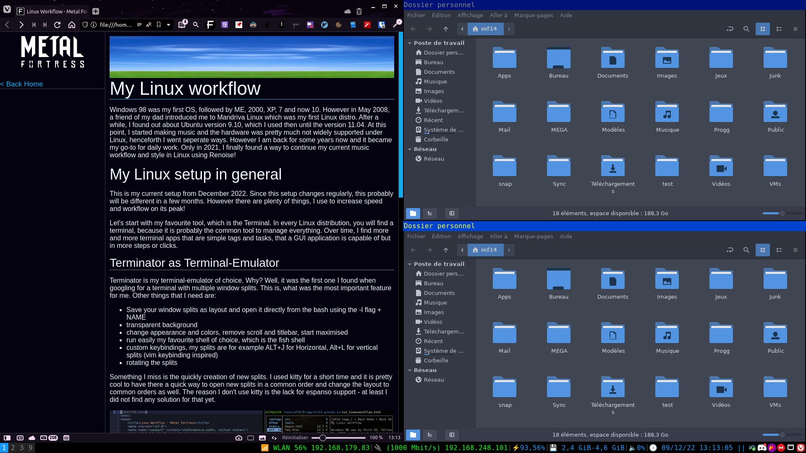

Windows 98 was my first OS, followed by ME, 2000, XP, 7 and now 10. However in May 2008, a friend of my dad introduced me to Mandriva Linux which was my first Linux distro. After a while, I found out about Ubuntu version 9.10, which I used then until the version 11.04. At this point, I started making music and the hardware was pretty much not widely supported under Linux, henceforth I went seperate ways. However I am back for some years now and it became my go-to for daily work. Only in 2021, I finally found a way to continue my current music workflow and style in Linux using Renoise!
This is my current setup from December 2022. Since this setup changes regularly, this probably will be different in a few months. However there are plenty of things, I use to increase speed and workflow on its peak!
Let's start with my favourite tool, which is the Terminal. In every Linux distribution, you will find a terminal, because it is probably the common tool to manage everything. Over time, I find more and more terminal apps that are simple tags and tasks, that a GUI application is capable of but in more steps or clicks.
Terminator is my terminal-emulator of choice. Why? Well, it was the first one I found when googling for a terminal with multiple window splits. This is, what was the most important feature for me. Other things that I need are:
- Save your window splits as layout and open it directly from the bash using the -l flag + NAME
- transparent background
- change appearance and colors, remove scroll and titlebar, start maximised
- run easily my favourite shell of choice, which is the fish shell
- custom keybindings, my splits are for example ALT+J for Horizontal, Alt+L for vertical splits (vim keybinding inspired)
- rotating the splits
Something I miss is the quickly creation of new splits. I used kitty for a short time and it is pretty cool to have there a quick way to open new splits in a common order and change the layout to common orders as well. The reason I don't use kitty is the lack for espanso support - at least I did not find any solution for that yet.

When there is something more customizable, then there are window tiling manager. They stack up your windows exactly in a grid tile and you never have to worry about the position yourself. The reason, why I prefer them, are the easy way to store your complete setting in one file. Also I am and was never fan of a fancy looking desktop. I prefer to have a quick ones and tiling window manager are no exceptions. i3 was also the first one I found and it is completely enough for me. Setup is
simpe, straightforward and it is probably the most well known wm out there, so you mostly find a solution on Reddit for your problems.
If I want to use a desktop environment, my favourite ones are MATE and Cinnamon. MATE would be my way to go all the time but it sadly has a ground-breaking bug with the app "Barrier", that I also use daily (KVM app) - sometimes in random time gaps, the mouse is freezing and you can't do nothing except resetting or disconnect.
Another cool thing in i3 are that you can setup your shortcuts as you wish. The standard keyboard shortcuts are a small run application called dmenu, open the terminal, split and move your windows, change workspaces etc. The keyboard shortcuts I added are open my favourite applications. Win+ALT are only about opening apps on my PC, for example Win+ALT+G for Gimp, D for Discord and the numbers from 1 to 9 are configured with my most used apps, for example 1 = Browser, 2 = File Manager, 5 - 8 are music applications and so on.
Win+Ctrl are for certain websites I visit on a daily base. 1 is for Youtube, 2 for twitter, g for github, 9 for my website, w for whatsapp and so on. If there is a subsite, I added the Shift key, for example Win+Ctrl+Shift+1 opens YouTube Studio.
